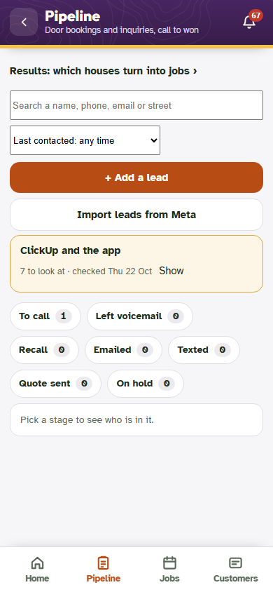
Items 1 to 11 of the fix brief from traverse/app/audit-1030/REPORT.md. Left or first: main before the fixes (dcedfc38). Right or second: this branch, merged with that main. Harness copy on port 8809 (scratchpad/ptest-auditfix), headless Chrome, phone 390x844 and desktop 1440x900, edition mode (TraverseRoofing-like) and Sixfold mode. The harness company is a stand-in; nothing here touched the live server.
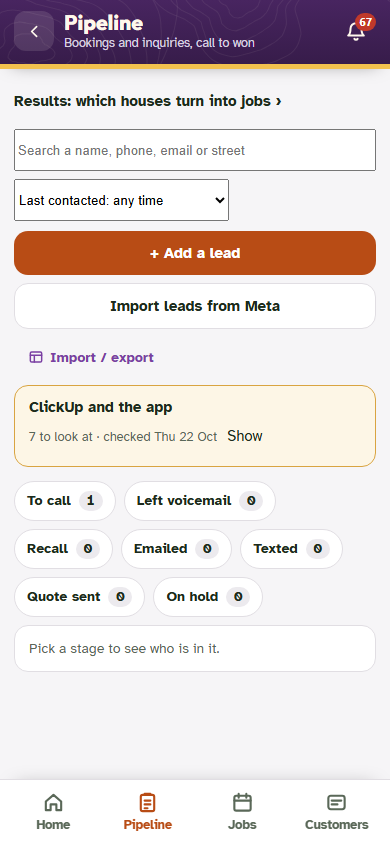
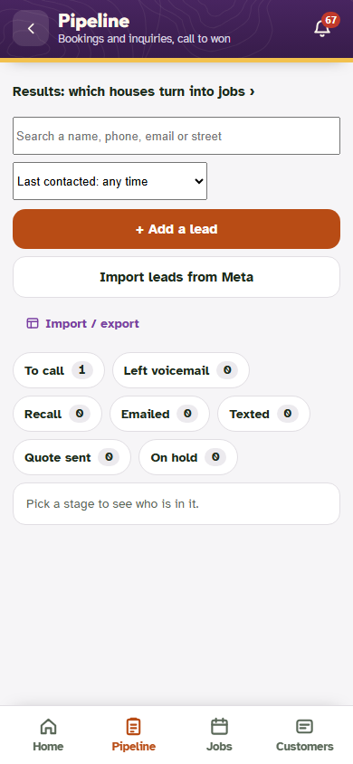
leads answer carries no cucheck and cucheckok is refused outside Sixfold
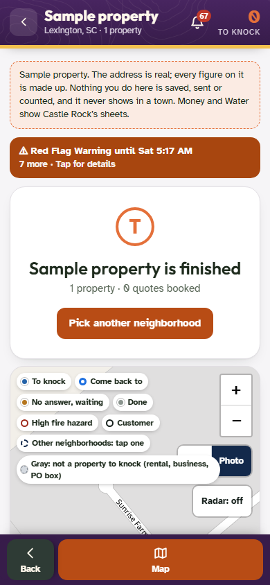
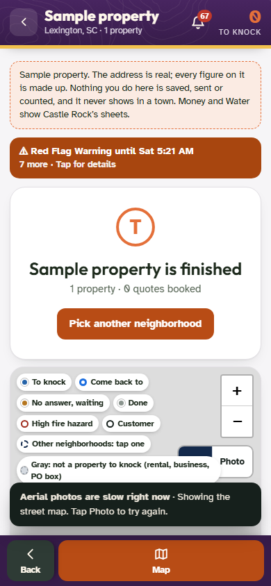
pc1.<time>.<hex> ids are accepted (checked live on 30 Oct: it answers pc1.1793501053.…); the 9 Oct fallback stays; a small map gives up once every tile it asked for has failed and none loaded (a phone asks for six; 15 was never reached)The prc answer's units are now the trade's: Roofing gets roofsq, roofft, perim, homeft, visit, each, flat (before: all eleven, lawn and solar included); unitsAll still carries every unit's words so an older line keeps its own and the picker adds it. House lookup tile: "the roof, the lot" (roofing), "the roof, the sun" (solar), "the house, the lot" (pest, security); Yards and Sixfold keep "the lawn, the lot".
Before (the minified page): Jen 22, ClickUp 16, Bryce 7, Brad 3, Brandon 2, SiteOne 2. After: every such string goes through who() and one WHO line; the editions' build swaps that line for plain words, leaves es.json entries naming them out, and fails if a name is left. The five built pages: 0 hits for Jen, Brandon, Brad, Bryce, SiteOne, Cai, Nneka; ClickUp once per page, in the Sync screen's CRM list as a product. Sixfold's own screens read exactly as before.
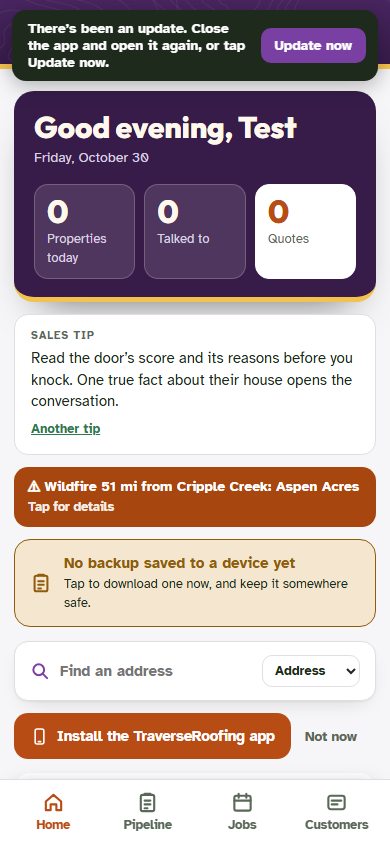
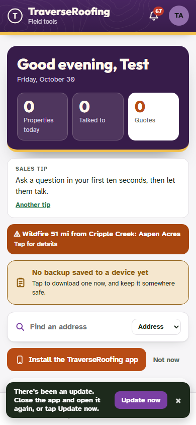
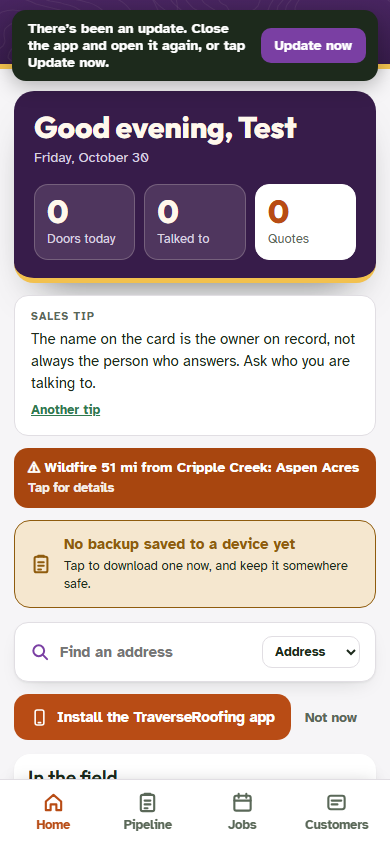
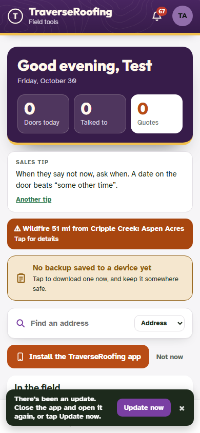
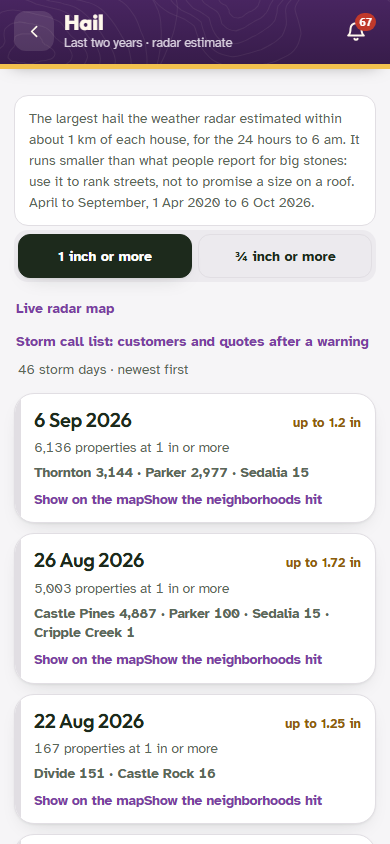
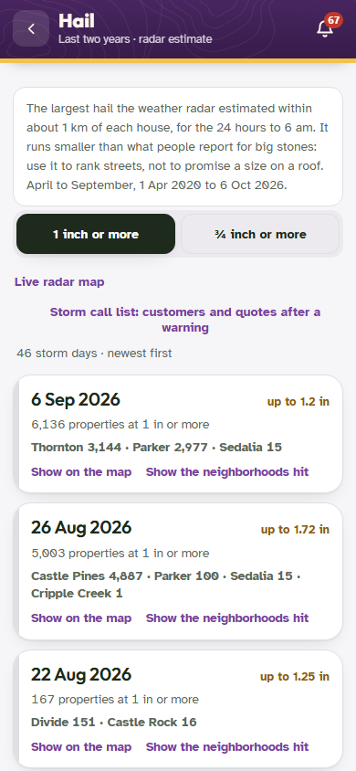

backups asked and refused (403) on every visit


me carry onteam; the page says so itself (after one me check, in case an admin just added them)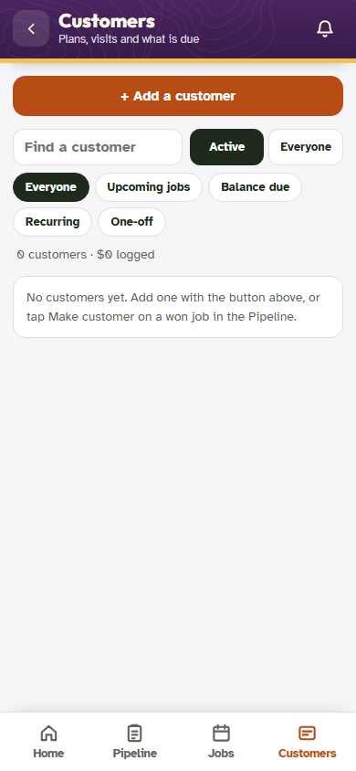


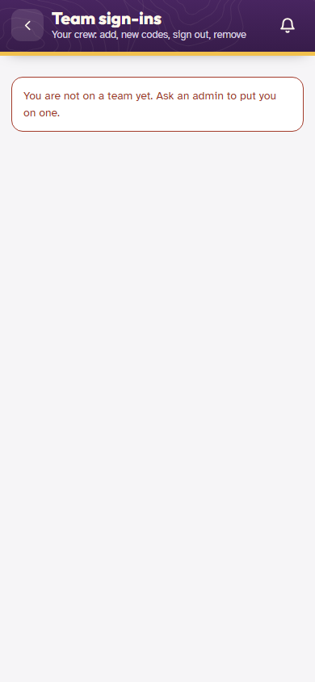
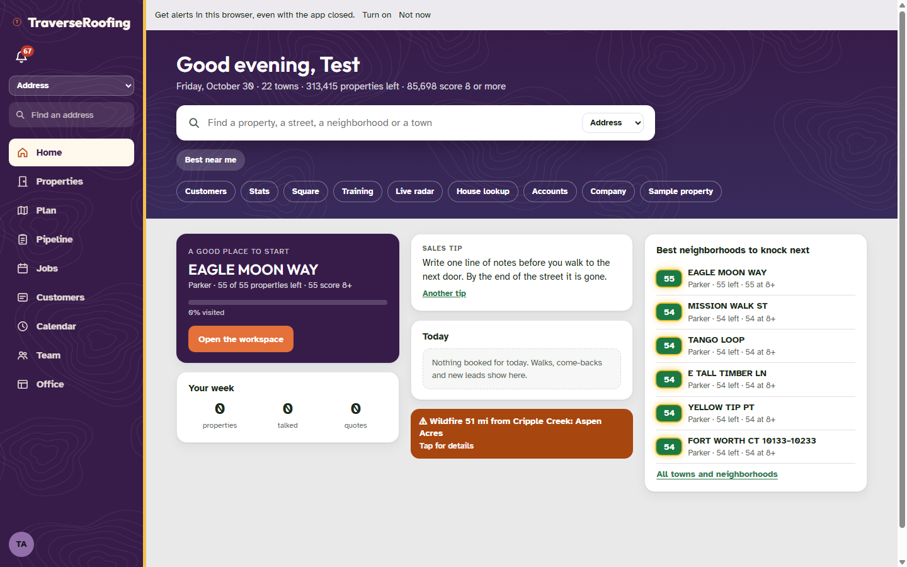
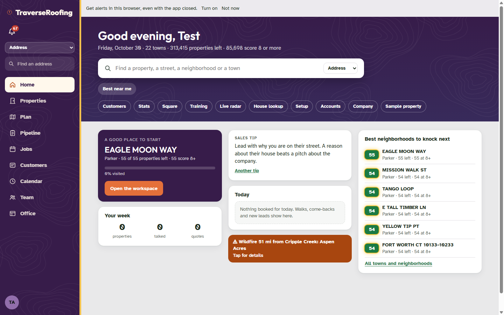
The server's source names (edSrcNames) say "At the property" in an edition and "At the door" on Sixfold 365; the page's LEAD_SRC/ST_SRC swap was already in main.
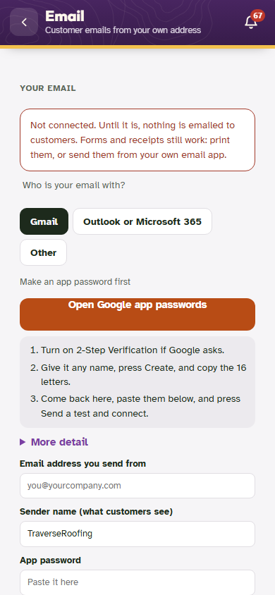
button.kitstep[data-k="email"]) › the quick way: "Open Google app passwords" (.mailgobtn); the "Sign in with Google" slot (.mailoauth) stays hidden on this server, which has no OAuth keys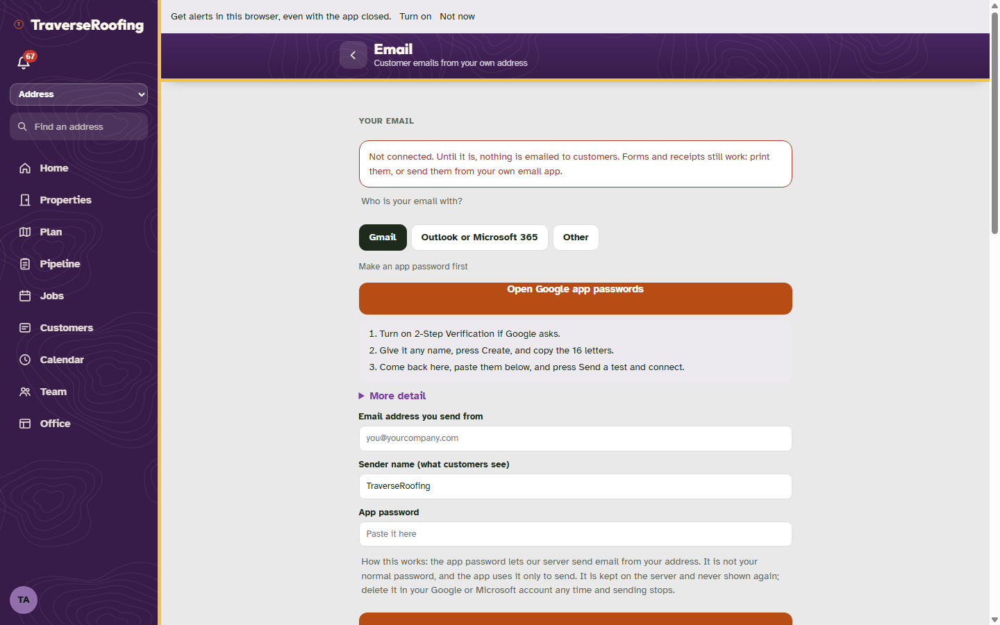
batch1029-ui-test.mjs passed on current main in this harness (43/0, before and after): its Setup step finds the "Setup checklist" tile by its text even inside a closed group and the rows are still .kitstep. The new suite opens the group bar first, as a person would.
| Suite | Before (main) | After (merged) |
|---|---|---|
| auditfix-test.mjs (new; items 1 to 11, both modes) | 19 passed, 22 failed (the 22 are the findings) | 42 passed, 0 failed |
Before = main before the fixes; after = this branch merged with main. The failures on both sides are the same pre-existing ones (reps-test's deposit flow, accounts-test's code-card timeout, card-test's Sixfold|Roofing preview, billlock-test's paused-data wording, perms-test's matrix after the doors-to-properties wording and the Spanish line), none of them from these changes.
| Suite | Before | After |
|---|---|---|
| edition · t1030-test | 64 passed, 0 failed | 64 passed, 0 failed |
| edition · reps-test | 14 passed, 4 failed | 14 passed, 4 failed |
| edition · batch1029-ui-test | 43 passed, 0 failed | 43 passed, 0 failed |
| edition · accounts-test | 29 passed, 1 failed | 29 passed, 1 failed |
| edition · payments-test | 20 passed, 0 failed | 20 passed, 0 failed |
| edition · card-test | 15 passed, 3 failed | 15 passed, 3 failed |
| edition · roles-test | 75 passed, 0 failed | 75 passed, 0 failed |
| edition · billlock-test | 101 passed, 7 failed | 101 passed, 7 failed |
| perms · perms-test | 119 passed, 5 failed | 119 passed, 5 failed |
| sixfold · t1030-test | 64 passed, 0 failed | 64 passed, 0 failed |
| sixfold · reps-test | 14 passed, 4 failed | 14 passed, 4 failed |
| sixfold · batch1029-ui-test | 43 passed, 0 failed | 43 passed, 0 failed |
| sixfold · roles-test | 75 passed, 0 failed | 75 passed, 0 failed |
| sixfold · accounts-test | 26 passed, 1 failed | 26 passed, 1 failed |
| sixfold · payments-test | 20 passed, 0 failed | 20 passed, 0 failed |
| sixfold · card-test | 1 passed, 1 failed | 1 passed, 1 failed |
| sixfold · billlock-test | 101 passed, 7 failed | 101 passed, 7 failed |